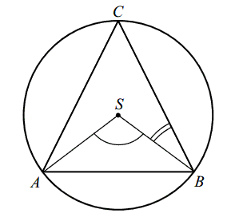

Różne zadania z geometrii
Liczba przekątnych siedmiokąta foremnego jest równa
A.\( 7 \)
B.\( 14 \)
C.\( 21 \)
D.\( 28 \)
B
Podstawa trójkąta równoramiennego ma długość \(6\), a ramię ma długość \(5\).
Wysokość opuszczona na podstawę ma długość
A.\( 3 \)
B.\( 4 \)
C.\( \sqrt{34} \)
D.\( \sqrt{61} \)
B
Odcinki \(AB\) i \(DE\) są równoległe. Długości odcinków \(CD, DE\) i \(AB\) są
odpowiednio równe \(1\), \(3\) i \(9\). Długość odcinka \(AD\) jest równa
A.\( 2 \)
B.\( 3 \)
C.\( 5 \)
D.\( 6 \)
A
Latawiec ma wymiary podane na rysunku.  Powierzchnia zacieniowanego trójkąta jest równa
Powierzchnia zacieniowanego trójkąta jest równa
Powierzchnia zacieniowanego trójkąta jest równa A.\( 3200 \) cm2
B.\( 6400 \) cm2
C.\( 1600 \) cm2
D.\( 800 \) cm2
C
Odcinki \(AB\) i \(CD\) są równoległe i \( |AB|=5, |AC|=2, |CD|=7 \) (zobacz
rysunek). Długość odcinka \( AE \) jest równa 
A.\(\frac{10}{7} \)
B.\(\frac{14}{5} \)
C.\(3 \)
D.\(5 \)
D
Pole prostokąta jest równe \(40\). Stosunek długości jego boków jest równy \(2:5\).
Dłuższy bok tego prostokąta jest równy
A.\( 10 \)
B.\( 8 \)
C.\( 7 \)
D.\( 6 \)
A
Trójkąty prostokątne równoramienne \(ABC\) i \(CDE\) są położone tak, jak na
poniższym rysunku (w obu trójkątach kąt przy wierzchołku C jest prosty). Wykaż, że \(AD = BE\). 
W trójkącie \(ABC\) poprowadzono dwusieczne kątów \(A\) i \(B\). Dwusieczne te
przecinają się w punkcie \(P\). Uzasadnij, że kąt \(APB\) jest rozwarty.
Na boku \(BC\) trójkąta \(ABC\) wybrano punkt \(D\) tak, by \(|\sphericalangle CAD|
= |\sphericalangle ABC|\). Odcinek \(AE\) jest dwusieczną kąta \(DAB\). Udowodnij, że \(|AC| =
|CE|\). 
Trójkąty prostokątne równoramienne \(ABC\) i \(CDE\) są położone tak jak na
poniższym obrazku (w obu trójkątach kąt przy wierzchołku \(C\) jest prosty). Wykaż, że
\(|AD|=|BE|\).
Dany jest prostokąt o bokach \(a\) i \(b\) oraz prostokąt o bokach \(c\) i \(d\).
Długość boku \(c\) to \(90\%\) długości boku \(a\). Długość boku \(d\) to \(120\%\) długości boku
\(b\). Oblicz, ile procent pola prostokąta o bokach \(a\) i \(b\) stanowi pole prostokąta o bokach
\(c\) i \(d\).
\(108\%\)
Dany jest prostokąt o bokach \(a\) i \(b\) oraz prostokąt o bokach \(c\) i \(d\).
Długość boku \(c\) to \(70\%\) długości boku \(a\). Długość boku \(d\) to \(130\%\) długości boku
\(b\). Oblicz, ile procent pola prostokąta o bokach \(a\) i \(b\) stanowi pole prostokąta o bokach
\(c\) i \(d\).
Pole prostokąta o bokach \(c\) i \(d\) jest mniejsze od o \(9\%\) od
pola prostokąta o bokach \(a\) i \(b\)
Z prostokąta \(ABCD\) o obwodzie \(30\) wycięto trójkąt równoboczny \(AOD\) o
obwodzie \(15\) (tak jak na rysunku). Obwód zacieniowanej figury jest równy
A.\( 25 \)
B.\( 30 \)
C.\( 35 \)
D.\( 40 \)
C
Najdłuższa przekątna sześciokąta foremnego ma długość \(8\). Wówczas pole koła
opisanego na tym sześciokącie jest równe
A.\( 4\pi \)
B.\( 8\pi \)
C.\( 16\pi \)
D.\( 64\pi \)
C
Proste \( k \) i \( l \) są równoległe. Miara kąta \( \alpha \) wynosi:
A.\(60^\circ \)
B.\(65^\circ \)
C.\(35^\circ \)
D.\(70^\circ \)
B
Oblicz długość odcinka \( x \) zaznaczonego na rysunku. 
\(x=\sqrt{113}\)
Środek \( S \) okręgu opisanego na trójkącie równoramiennym \( ABC \), o ramionach
\( AC \) i \( BC \), leży wewnątrz tego trójkąta.  Wykaż, że miara kąta wypukłego \( ASB \) jest cztery razy większa od miary
kąta wypukłego \( SBC \).
Kąt \( CAB \) trójkąta prostokątnego \( ACB \) ma miarę \( 30^\circ \). Pole
kwadratu \( DEFG \), wpisanego w ten trójkąt (zobacz rysunek), jest równe \( 4 \). Oblicz pole
trójkąta \( ACB \).
\(P=4+\frac{19\sqrt{3}}{6}\)
Prostokąt \(ABCD\) o przekątnej długości \(2\sqrt{13}\) jest podobny do prostokąta
o bokach długości \(2\) i \(3\). Obwód prostokąta \(ABCD\) jest równy
A.\( 10 \)
B.\( 20 \)
C.\( 5 \)
D.\( 24 \)
B
Dłuższa przekątna sześciokąta foremnego ma długość \(2\sqrt{2}\). Pole tego
sześciokąta jest równe
A.\( 12\sqrt{3} \)
B.\( 6\sqrt{3} \)
C.\( 2\sqrt{3} \)
D.\( 3\sqrt{3} \)
D